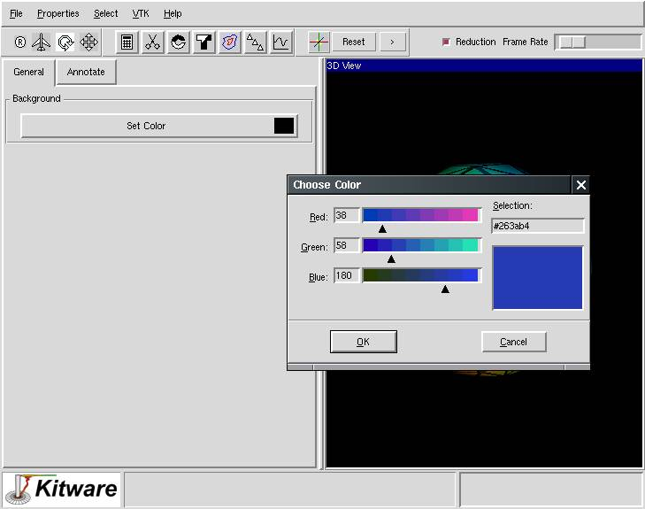

Prev
Up
Next
Step 10
View from Properties menu.
Step 11
Select the General tab from the view notebook and click on the "Set Color" button. Change the color of the background using the color dialog.

Prev
Up
Next
Last modified: Mon Oct 22 16:12:45 EDT 2001